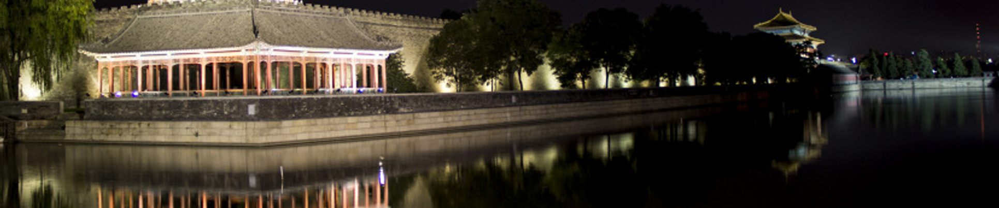

摄影的灵魂就是光，光影的魅力是无穷无尽的
The soul of photography is light. The charm of light and shadow is endless
外景拍摄的照片是所有摄影作品中风格最为清新自然的
Location shooting photos are the most fresh and natural comparing with all photographical works
基础、构图、色彩、用光技巧
Fundamentals, composition, color, and light techniques